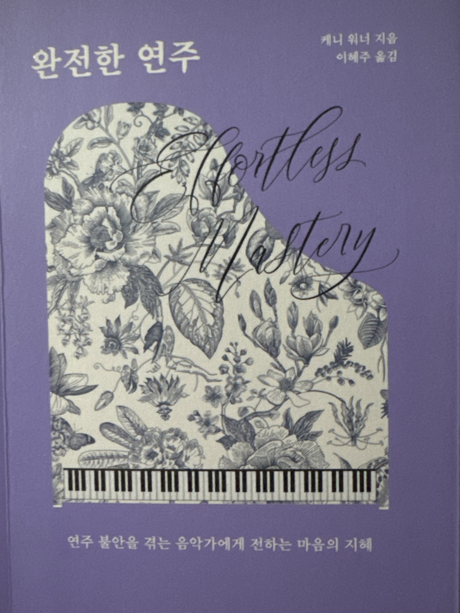

ENOCH MUSIC ACADEMYENOCH NOTE — STAGE FRIGHT
Before the Exam
시험장에서
떨릴 때,
해 볼 3가지
대기실에서, 이름 불리기 전
2분이면 할 수 있어요.
힘을 빼는 연습01 / 07
ENOCH MUSIC ACADEMYENOCH NOTE — STAGE FRIGHT
Why
떨리는 건,
잘하고 싶어서
'잘해야 한다'는 마음이 클수록 어깨와 손에 힘이 들어갑니다.
마음은 마음대로 안 되지만, 몸은 풀 수 있거든요.
Tip 01길게 내쉬기
Tip 02머리부터 발끝까지 힘 빼기
Tip 03잘해야 한다는 생각, 잠깐 내려놓기
힘을 빼는 연습02 / 07
ENOCH MUSIC ACADEMYENOCH NOTE — STAGE FRIGHT
Tip 01
길게,
내쉬기
깊이 들이쉬고, 아주 오래 천천히 내쉽니다.
들이쉰 것보다 더 길게.
숨이 짧아질 때, 그 자리에서 바로 할 수 있어요.
힘을 빼는 연습03 / 07
케니 워너, 『완전한 연주』 185쪽 요약.
ENOCH MUSIC ACADEMYENOCH NOTE — STAGE FRIGHT
Tip 02
머리부터 발끝까지,
힘 빼기
머리 꼭대기, 어깨, 손가락, 발끝까지 한 곳씩.
피아노 — 손가락을 건반에 그냥 떨어뜨리듯.
보컬 — 발을 단단히 딛고, 내쉬는 숨이 노래가 된다고.
우리는 지금 힘들이지 않는
동작의 수월성을 배우는 중이다.
— 케니 워너, 『완전한 연주』 188쪽
힘을 빼는 연습04 / 07
인용 출처: 케니 워너, 『완전한 연주』, 이혜주 옮김, 현익출판. 쪽수는 각 인용 아래 표기.
ENOCH MUSIC ACADEMYTIP 03
잘해야 한다는 생각,
잠깐 내려놓기
오늘 할 일은 연습한 만큼 연주하는 것.
잘 보여야 한다는 생각은, 2분만 옆에 두세요.
“
위대한 연주자가 되려는
욕구를 떠나보내라
— 케니 워너, 『완전한 연주』 185쪽
힘을 빼는 연습05 / 07
인용 출처: 케니 워너, 『완전한 연주』, 이혜주 옮김, 현익출판.
ENOCH MUSIC ACADEMYFROM THE BOOK

From the Book
이 이야기가
나온 책
『완전한 연주』
케니 워너 지음
이혜주 옮김 · 현익출판
재즈 피아니스트가 연주 불안을 겪는 음악가에게 쓴 책. 오늘 이야기는 4장 '단계적 연습'의 1단계에서 가져왔어요.
1단계는 당신을 내면의 자신에게
소개하는 훈련이다.
— 181쪽
힘을 빼는 연습06 / 07
책 사진: ENOCH 촬영 · 『완전한 연주』 케니 워너 지음, 이혜주 옮김, 현익출판.
ENOCH MUSIC ACADEMYTHE ENOCH WAY
ENOCH
떨릴수록,
힘을 빼는 연습.
같은 곡도, 사람마다 다르게 가르칩니다.
ENOCH 입시 과정은 모두 1:1.
시험장에서도 연습한 만큼 연주할 수 있도록,
주기적으로 모의고사를 진행합니다.
에녹실용음악학원 시흥점
경기도 시흥시 은행로 157 2층010 3949 3666
Vocal · Guitar · Drum · Bass · Piano · MIDI · 작곡
힘을 빼는 연습07 / 07